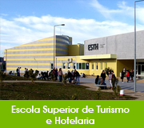
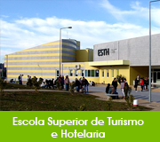

Learn from yesterday,
— Albert Einstein
live for today,
hope for tomorrow.
The important thing
is not to stop questioning.
According to the World Health
Organization (WHO):
Health is a state of complete physical, mental, and social well-being.
| Endereço |
Avenida Dr. Francisco Sá Carneiro, n.º 50 6300-559 Guarda |
|---|---|
| Site | Site original |
| ipg@ipg.pt | |
| Telefone | 271 220 100 |
| Fax | 271 222 690 |
| 961 903 792 |